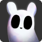
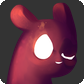
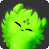

Characters
Slugcats are both the primary protagonists and the main playable characters of Rain World. They are small creatures that can come in various colors, and with black or white eyes, thin arms, broad legs with small feet, broad-ended ears, and a thick tail that tapers at its end. The player must keep the Slugcat alive as they explore the world, confront strange Creatures, and work towards challenging Achievements. The Slugcats have a variety of movement abilities.
Characters
 Monk |
 | Hunter |
Characters
 Gourmand |
 Artificer |
 Rivulet |
 Spearmaster |
 Saint |
When first starting the game, the player has the option of playing as two different
Slugcats: the
 Monk
and the
Survivor.
After finishing the game as either, the player unlocks the ability to play as the
Hunter.
Monk
and the
Survivor.
After finishing the game as either, the player unlocks the ability to play as the
Hunter.
If the Rain World Downpour DLC is installed, five more Slugcats may be unlocked. The
Gourmand,
and the
Artificer
are unlocked in the same way as Hunter. After finishing the game as either the Gourmand,
Artificer, or Hunter, the player may play as the
 Rivulet
or
Spearmaster.
Once both of their campaigns have been completed, the
Rivulet
or
Spearmaster.
Once both of their campaigns have been completed, the
 Saint
is unlocked.
Saint
is unlocked.
.